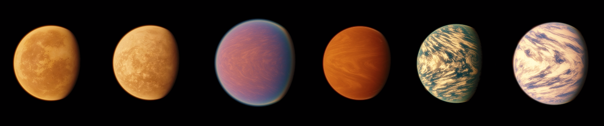

The Exoplanet Archive recently reached a major milestone - 6,000 confirmed exoplanets! Discovering 6,000 exoplanets is a huge achievement shared by scientists and astronomy enthusiasts around the world, using everything from backyard telescopes to cutting edge space-based observatories. We at the TESS Science Support Center are proud of the contributions made by all of the TESS community, who have used TESS data to lead to the discovery and confirmation of 693 planets so far, with many more to come.
To celebrate this achievement, we dug into the table of the 693 TESS planets currently in the exoplanet archive to find some of TESS' "greatest hits." If your favorite planet didn't make the list, fear not. All exoplanets are amazing and unique balls of gas and rock. Click the drop down menu below to explore the winners of this edition of the TESS planet awards. We hope this list inspires you to dive into learning about the rich variety of planets that we have found, and sparks your imagination for the possibilities of what we have yet to discover.

OK, we're already cheating a little bit here. TOI-1994 b isn't technically an exoplanet, it's a low-mass brown dwarf (also known as a "failed star"). These objects have about the same radius as Jupiter, but are much more massive - in this case TOI-1994 b is only 1.2 times the radius of Jupiter but 22 times the mass! TOI-1994 b orbits its host star every 4 days.
TESS observed the host star in 30-minute cadence Full Frame Images in Sectors 9 and 10 and with 2-minute cadence data in Sector 36, after which the transit was found by the Quick-Look Pipeline. Subsequently, TESS observed the star with 2-minute cadence in Sectors 62 and 63. Follow up transit observations were taken by ground-based observatories at the Las Cumbres Observatory Global Telescope Network (LCOGT) and the Evans telescope at El Sauce Observatory to confirm the transit. The mass was measured using Radial Velocity observations taken by MINERVA-Australis and the CHIRON instrument on the SMARTS telescope.
The TESS planet with the largest radius is a bit tricky to peg down. The exoplanet archive has a number of planets with radii more than twice that of Jupiter. However, they are all grazing planets, which means the planet transits near the edge of the star, not the center, so it is difficult to get a really good estimate of the planet's radius. This is because a planet's radius is measured by the relative drop in stellar flux during the transit which is directly tied to the planet-to-star radius. Therefore, if the planet only partially crosses the stellar disk, we don't know exactly how big the planet is. So while TOI-1408 b, TOI-3540 A b, and HIP 65 A b are undoubtedly big planets, we currently will withhold the prize to a planet with a more definitive measured radius.
That leads us to BD-14 3065 b (also known as TOI-4987 b). This object has a mass right near the boundary of where deuterium burning is expected to start in the planet core, which is one distinguisher between planets and brown dwarfs. Three Sectors of TESS showed the radius of this planet/brown dwarf is a whopping 1.9 times that of Jupiter, while ground-based spectroscopy provides an estimated mass of 12.4 times that of Jupiter. Even though this is a massive planet, the radius is larger than expected based on theoretical models. The authors suggest that this could be due to extra internal heating from deuterium burning, which may suggest it is more likely a brown dwarf. We look forward to seeing the results of more observations of this interesting system!
Small stars are great for three reasons 1) their small radius makes it easier to find smaller planet transits, 2) they are cooler so planets with periods of only tens of days can be in the habitable zone, and 3) there are a lot of them! Sure, they are faint so it can be a challenge to observe them at great distances, but let's stick to the positive. This next system is around the M dwarf star L 98-59. Originally, this system was found to have 3 different Earth-sized planets after 3 Sectors of data in the first year after TESS launched. The innermost planet (L 98-59 b) has a period of only 2.3 days and a radius of only 0.75 times that of Earth. Originally, mass measurements were not available. However, since its discovery, this system has been extensively studied by ground based and space spaced observatories (including Hubble and JWST). Based on both radial velocity observations and transit timing variations (TTVs; measuring how much the planets in the system gravitationally 'tug' at each other changing their orbit times) the inner planet has a mass of only half the mass of Earth. And that's not all, since its original discovery, 2 more planets have been found in the system bringing the total to 5. This is a fascinating system with a rich observation history that we recommend you explore, as we can't fit all of the details in one blog post!
The smallest radius planet also happens to be orbiting a M dwarf star. TESS’ observing strategy tiles across the sky in ~27 day long stares, slowly building up near full-sky coverage. In the primary mission and first extension, TESS generally observed the southern sky for a year, then the northern sky for a year. Near the northern and southern ecliptic poles, there is an area of sky that is covered near-continuously. GJ 238 b (also known as TOI 486) happens to lie in this zone of coverage, so within a few years, TESS observed the star in 25 Sectors. With a period of only 1.74 days, that means there is a lot of data to tease out a small transit signal. The small size of this planet does make Radial Velocity measurements challenging, but may be possible with the most state-of-the-art facilities. This exemplary planet shows the value of repeated observations with TESS, as signals that are at first too faint to be detected can begin to emerge as we build up more and more observations.
These winner in this category has a toasty dayside temperature of 3,631 Kelvin. Unsurprisingly, this ultra-hot Jupiter is in a very tight orbit around its star, with an orbital period of only ~16 hours. This means it is orbiting with a separation of less than 2.3 times the star's radius (for context, Mercury, the planet closest to the Sun in our solar system, orbits at a distance of 62 times the Sun's radius). The host star has a radius 1.4 times larger than the Sun. Radial velocity measurements show that this planet has a mass 5 times larger than Jupiter. This planet reflects so much light that it also shows an occultation, where we can measure how much reflected light is blocked when the planet passes BEHIND the star.
The star was first observed by TESS in Sector 25 in the Full Frame Images. The Quick Look Pipeline identified the transit, and the candidate was added to the TESS Objects of Interest list. This triggered follow-up observations by a number of ground based facilities (20 in total!). The mass was measured via the Radial Velocity method using data from two different facilities, the Tillinghast Reflector Echelle Spectrograph (TRES) and the Fiber-fed Echele Spectrograph (FIES).
Stars may seem like constants in the sky, but they have a lifecycle all their own. Many stars, around the size of our Sun and smaller, will eventually puff up into red giants and shed their outer layers. The core that is left will compress into a really dense ball (think the mass of the Sun squeezed inside the Earth). With no more nuclear burning, these objects simply sit there and slowly cool over billions of years.
Sound like a cozy home for a planet? Absolutely not! But a planet orbiting a white dwarf was actually observed using TESS data. Further ground based observations including spectroscopy from a variety of sources confirmed this bizarre object. The Jupiter-sized planet orbits the white dwarf WD 1856+534 every 1.4 days. Later observations with JWST's MIRI instruments show that the planet has a temperature of 186 K (or -124 degrees Fahrenheit).
In this case, we don't mean weirdest (we don't judge our planets!). Eccentricity is a measurement of how close the planet's orbit is to a circle. An eccentricity of 0 is a perfect circle, while an eccentricity of 1 would mean the orbit is actually a parabola and the planet would leave the star and never come back. Most of the planets in our solar system have eccentricities near zero. Earth for example has an eccentricity of 0.017. Mercury is the most eccentric with a value of 0.206 (Pluto has an eccentricity of 0.244, but alas had to give up this title when it was demoted).
TIC 241249530 b on the other hand has an eccentricity of 0.93. This means that over the course of its 167 day orbit, it gets 10 times closer to its star than Mercury gets to our Sun, then out to the equivalent of Earth’s orbit. A single transit was first seen in TESS Quick Look Pipeline Sector 20 data from January 2020. Follow-up RV observations with the NEID spectrograph helped to constrain the orbital period and the eccentricity allowing the team to predict when the next transit may be seen. The transit was successfully caught again in February 2024 with the ground-based ARCTIC imager at Apache Point Observatory. Interestingly, this may be the discovery of a planet in transition. One theory of 'hot Jupiter' planets (planets roughly the size of Jupiter that orbit their stars in just a few days, making them extremely hot) is that they actually form a large distance from their star and, through a process called eccentric migration, circularize close to the star. We can check back in a billion years to confirm this planet becomes a hot Jupiter!
TOI 6255 b (also known as GJ 4256 b) is a roughly Earth-sized planet that orbits its star every - wait for it - 5.7 HOURS! That's right, a year on this planet lasts for less than one work day here on Earth. The host star is smaller and cooler than our Sun, but that proximity still means that the temperature on this planet is around 1,300 K (1,880 fahrenheit), which means any surface rock would be at least partially melted.
The planet was observed by TESS in Sectors 16 and 56 with 2-minute cadence. Even though the planet has a small radius, the short period allows for many transits to be observed in only two sectors, allowing for a clear transit detection. Radial Velocity observations from KPF and CARMENES showed the planet to be ~1.4 times more massive than Earth.
This is our last of the TESS planet awards, and I think it just may be the most fascinating. TOI-201 lies in TESS’ continuous viewing zone and was observed for the entirety of the mission’s first year. This long stare allowed for the identification of a long period (~53 days) planet, which is typically tricky for TESS to find given the 27-day Sectors. In addition to TESS, TOI-201 b transits were observed by the Next Generation Transit Survey (NGTS) and RVs were obtained by the FEROS, HARPS, CORALIE, MINERVA-Australis, and NRES spectrographs. All of this together showed a planet with a radius nearly equal to Jupiter, but half the mass.
This could have been the end of the story, but TESS continued to observe this star after its initial discovery. Observations of the transits from TESS' fifth year showed an increase in the orbital period of TOI-201 b. Modeling of the change in the transit times indicated that there was another object in the system with a long period of ~7.7 years. Shockingly, this prediction was confirmed when TESS observed another single transit of a planet that was consistent with the predicted object. This discovery allowed a more detailed fit to the system and showed the new planet TOI-201 c to have a mass 14 times that of Jupiter. The planet has a rather eccentric orbit of around 0.6. This system is a beautiful demonstration of how different types of measurements really complement each other to piece together more information about planetary systems.